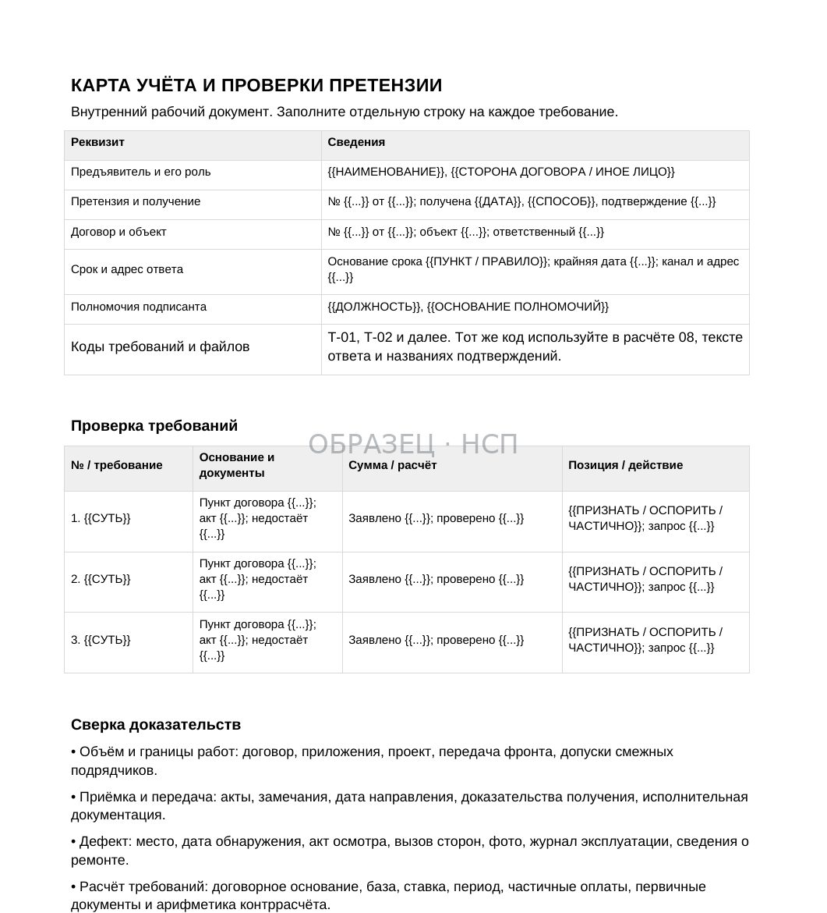
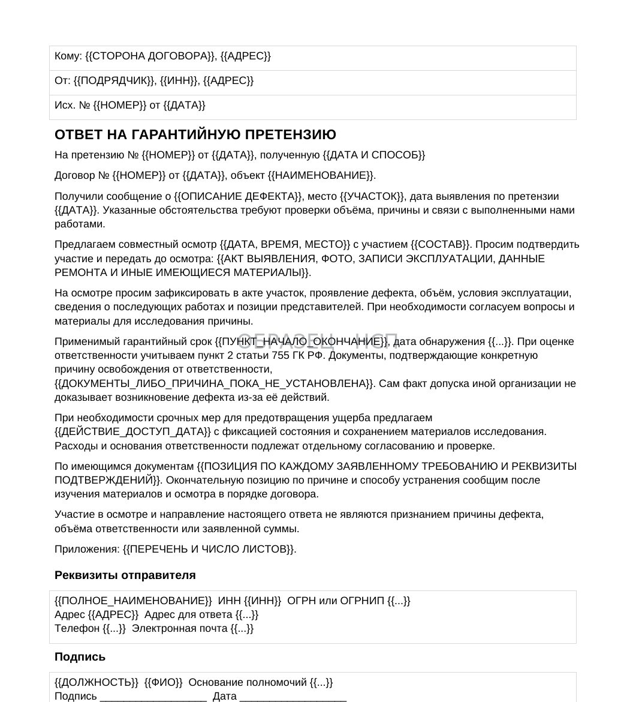
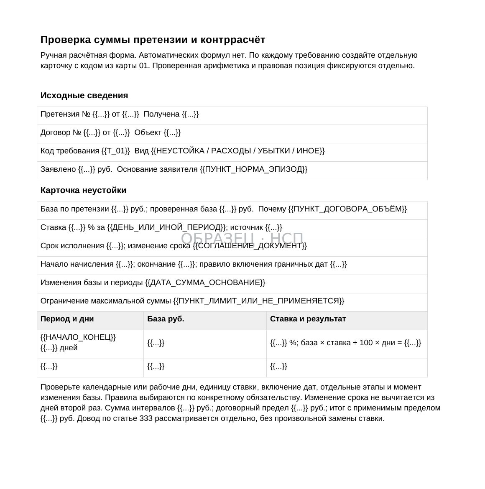
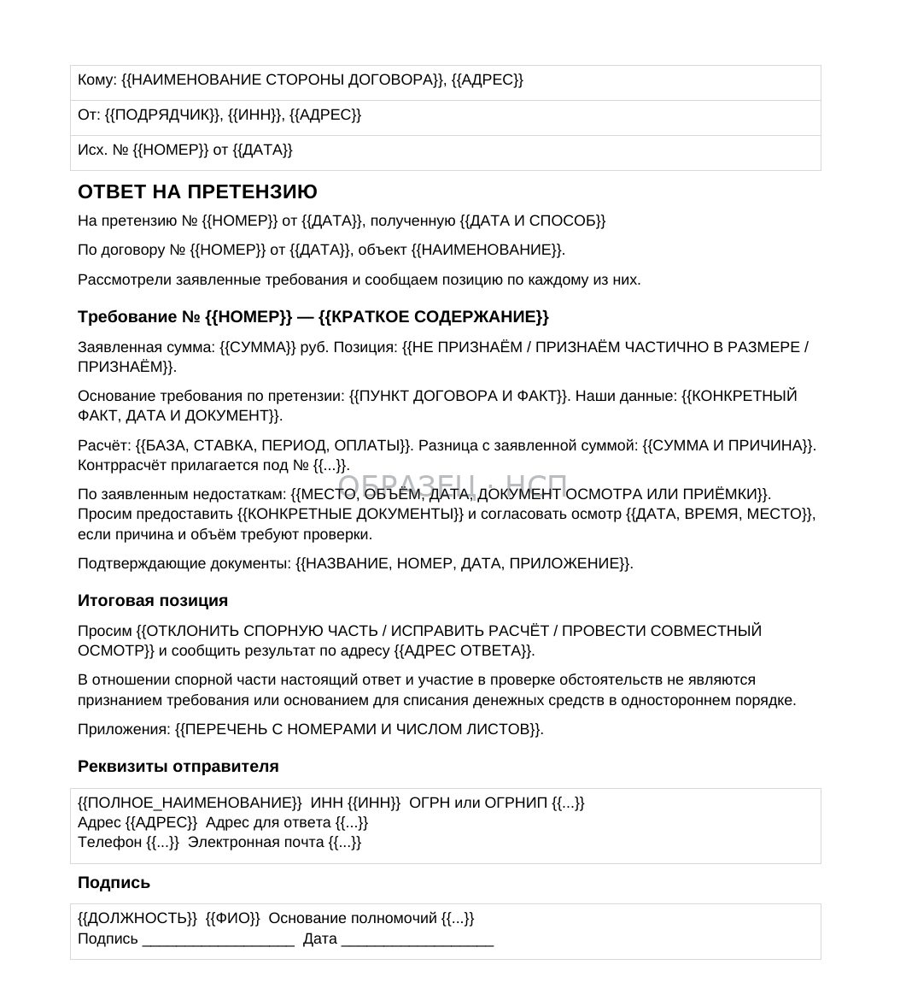

ПРЕТЕНЗИЯ / СТРОИТЕЛЬНЫЙ ПОДРЯД
Ответ на претензию заказчика по строительному подряду: порядок проверки, контррасчёт и образец
Как подрядчику проверить претензию о неустойке, недостатках или возврате денежных средств, собрать доказательства и подготовить мотивированный ответ без необоснованного признания долга.
Претензия заказчика — не судебное решение и не доказательство сама по себе. В документе могут быть обоснованные требования, ошибки расчёта, спорные фактические обстоятельства и суммы, которые подрядчик ранее уже оплатил или погасил.
Риск для исполнителя возникает, если он отвечает общими словами, игнорирует отдельные требования или подписывает акт сверки без проверки оснований. Другой риск — не отвечать вовсе, хотя договор предусматривает конкретные сроки и порядок реагирования.
Рабочая задача подрядчика — разобрать каждое требование отдельно, сопоставить его с договором и доказательствами и зафиксировать итоговую позицию. Ответ должен показывать не эмоциональное несогласие, а проверяемые обстоятельства, расчёт и приложения.
1. Зафиксируйте получение претензии
Начните с регистрации входящего документа: от кого он поступил, по какому договору, какой датой составлен, когда и каким способом получен.
Сохраните исходное письмо, почтовый конверт, электронное сообщение, вложения, уведомление о вручении и иные подтверждения доставки. Если претензия поступила через согласованный электронный документооборот, сохраните квитанции и сведения о подписанте.
Проверьте, обращается ли к вам именно сторона договора или третье лицо. При участии застройщика, технического заказчика и генерального подрядчика это важно: у каждой организации может быть своя роль, но не всякое требование третьего лица создаёт непосредственную денежную обязанность субподрядчика.
Внутри компании назначьте ответственного за анализ требований и отдельного исполнителя для проверки фактических документов по объекту.
Результат: карточка претензии с реквизитами, датами, контактами предъявителя, договором, заявленными требованиями и перечнем полученных приложений.
2. Проверьте срок ответа, не смешивая его с судебным досудебным сроком
Нужно отдельно проверить закон, договор, согласованные правила электронного обмена и текст претензии.
В строительном подряде не существует универсального правила, по которому на любую претензию необходимо дать ответ ровно за 30 дней. Конкретные обязанности и последствия могут вытекать из договора, специальных норм или характера предъявленного требования.
Часть 5 статьи 4 АПК РФ предусматривает для определённых денежных споров между хозяйствующими субъектами досудебный порядок: обращение в арбитражный суд, как правило, возможно по истечении 30 календарных дней со дня направления претензии, если законом или договором не установлен иной срок либо порядок.
Это правило о возможности обращения в суд, а не универсальный срок обязательного ответа получателя.
Если договор предусматривает ответ за пять или десять рабочих дней, подрядчику нужно оценить применимость именно этого условия и вовремя направить документ.
Если информации недостаточно, можно запросить подтверждающие материалы и сообщить, что окончательная позиция по конкретным требованиям будет сформирована после проверки. Такой запрос сам по себе не продлевает договорный срок автоматически.
3. Разделите претензию на самостоятельные требования
Один документ заказчика нередко содержит несколько оснований: просрочку срока, нарушение качества, расходы на устранение дефектов, требование вернуть аванс, начисленную неустойку и предложение зачесть деньги.

Для каждого требования заполните отдельную строку в рабочей карте:
- Наименование и точная сумма требования.
- Пункт договора и указанная заказчиком правовая норма.
- Период или дата предполагаемого нарушения.
- Доказательства, приложенные к претензии.
- Документы и сведения со стороны подрядчика.
- Предварительная позиция: подтверждено, не подтверждено или требуется дополнительная проверка.
Не объединяйте все суммы в один ответ «с претензией не согласны». Суду и контрагенту должно быть понятно, с какой именно частью требования связано каждое возражение.
Если отдельная обязанность действительно нарушена, это не означает автоматического признания всех остальных пунктов претензии.
4. Сопоставьте требования с действующей редакцией договора
Проверьте подписанный договор, все дополнительные соглашения, протоколы разногласий, сметы, календарный план, графики платежей и приложения о составе работ.
Важна не только формулировка отдельного пункта, но и последовательность изменений. Договорная дата могла быть перенесена, часть объёма исключена, а порядок приёмки скорректирован.
Для договора субподряда дополнительно установите, кто по договору вправе выдавать обязательные указания, согласовывать допработы и подписывать акты.
Сопоставьте основания претензии с фактической перепиской. Отдельное электронное сообщение представителя заказчика не всегда означает согласованное изменение договорного обязательства.
Сводную проверку условий можно проводить по статье «Договор субподряда: образец, проверка условий и протокол разногласий».
5. Соберите доказательства по объекту
В зависимости от предмета спора понадобятся КС-2, КС-3, акты этапов, общий и специальные журналы работ, исполнительная документация, акты освидетельствования, уведомления о готовности, переписка, документы передачи строительной площадки и платёжные поручения.
Не стоит отправлять заказчику несистематизированный архив на сотни страниц.
Сформируйте опись: название документа, дата, номер, к какому требованию он относится, что именно подтверждает и где хранится оригинал.
Если спор касается неподписанных актов, отдельно проверьте доказательства их направления, основания отказа заказчика и обстоятельства фактической сдачи результата.
Статья 753 ГК РФ предусматривает оформление сдачи и приёмки строительных работ актом. Односторонний акт может иметь доказательственное значение, однако его действительность зависит, в частности, от обоснованности отказа другой стороны от подписания.
Отсутствие подписи заказчика не всегда доказывает невыполнение работ, но и одностороннее оформление не гарантирует победу в споре.
6. Если претензия связана с нарушением срока работ
Сначала определите, какой именно срок якобы нарушен: начальный, конечный либо промежуточный срок этапа.
Затем составьте хронологию событий: дата передачи фронта работ, передача рабочей документации, доступность материалов и оборудования, изменения проекта, уведомления о препятствиях, согласованные дополнительные объёмы и документы о завершении.
Отдельно проверьте, какие обязательства заказчика должны были предшествовать выполнению работ. Если он не передал фронт или необходимую документацию, оцените влияние этого обстоятельства на график и соблюдение порядка уведомлений.
Не используйте формулировку «заказчик виноват» без указания конкретного события, документа и причинной связи с задержкой.
Если имеются основания для освобождения от ответственности либо её изменения, их следует сформулировать по каждому периоду просрочки.
Претензия может включать штраф одновременно за несколько периодов. Проверяйте, не дублируется ли один и тот же интервал под разными наименованиями.
7. Проверьте расчёт неустойки
Для денежной претензии недостаточно сверить итоговую сумму.
Проверьте ставку, расчётную базу, начало и окончание периода, применяемое ограничение ответственности, изменения цены и объёма, а также частичное выполнение обязательств.
В соответствии со статьёй 330 ГК РФ неустойка определяется законом или договором. Необходимо установить, какое именно обязательство обеспечивает конкретная санкция.
При наличии оснований можно поставить вопрос об уменьшении неустойки по статье 333 ГК РФ. Для предпринимательского обязательства это требует заявления должника, а уменьшение договорной неустойки допускается при соблюдении установленных законом условий. Нельзя обещать её снижение автоматически.
Пример ручного контррасчёта. Заказчик начислил 0,1% в день от 5 млн ₽ за 20 дней: 100 000 ₽. Если по договору расчётной базой является стоимость просроченного этапа, а не вся цена договора, необходимо установить стоимость именно этого этапа и пересчитать сумму. Результат зависит от текста соглашения и обстоятельств исполнения.
Формулируйте в ответе отдельно арифметическую ошибку и правовое возражение против самой ответственности.
8. Если заказчик заявляет о недостатках качества
Нужно определить конкретный результат работ, характер недостатка, дату его выявления, обстоятельства приёмки и предусмотренный договором гарантийный режим.

По статье 720 ГК РФ имеют значение порядок осмотра, фиксация явных недостатков при приёмке и уведомление о скрытых недостатках.
Статья 723 ГК РФ предусматривает различные требования заказчика при ненадлежащем качестве работ с учётом закона и условий договора.
Не следует автоматически признавать гарантийным случаем любой недостаток, выявленный в период эксплуатации. Требуется проверить причину, гарантийные обязательства, условия эксплуатации, вмешательство других организаций и доказательства.
Если необходим осмотр, предложите разумный порядок совместного обследования и фиксации результатов. При споре о причинах и объёме дефектов может потребоваться экспертиза.
Ответ должен разграничивать признание факта получения претензии, готовность участвовать в осмотре и признание конкретной обязанности устранить дефект за свой счёт.
9. Если требуют возместить устранение недостатков третьим лицом
Заказчик может приложить акт стороннего исполнителя, счёт и платёжное поручение.
Проверьте, какие именно работы выполнила третья организация, относятся ли они к спорному результату, какой дефект устраняли и как определена стоимость.
Отдельно необходимо установить договорное и законное основание для взыскания соответствующих расходов.
В общем случае по статье 723 ГК РФ право заказчика требовать возмещения своих расходов на устранение недостатков связано, в частности, с предусмотренным договором правом самостоятельно устранять их; при иных обстоятельствах могут применяться другие правила, которые нужно анализировать отдельно.
Наличие акта и оплаты третьему лицу подтверждает определённые расходы, но не всегда доказывает ответственность исходного подрядчика, разумность суммы и причинную связь.
Попросите представить недостающие дефектные ведомости, фотоматериалы, документы осмотра, расчёты и подтверждения фактического объёма устранения.
10. Если предъявлено прямое требование третьего лица
При строительном субподряде важно определить, с кем у подрядчика заключён договор.
Статья 706 ГК РФ регулирует отношения с участием генерального подрядчика и субподрядчиков.
Непосредственное обращение застройщика либо технического заказчика к субподрядчику само по себе не доказывает наличие между ними прямого денежного обязательства.
Однако нельзя отклонять любое требование третьего лица только потому, что оно не подписало договор субподряда. В конкретных обстоятельствах могут существовать отдельные договорные или законные основания.
Проверьте основание требования, полномочия заявителя, предмет обязательства и документы передачи работ.
В ответе чётко отделите вопросы полномочий предъявителя от возражений по качеству, сроку и размеру заявленной суммы.
11. Если заказчик предлагает удержать сумму из оплаты
Претензия может одновременно содержать уведомление о зачёте, об удержании или об уменьшении очередного платежа.
Необходимо определить правовую природу операции. Гарантийное удержание, зачёт встречных однородных требований, договорное уменьшение платежа и взыскание неустойки — разные основания.
Для зачёта по статье 410 ГК РФ нужно проверить предусмотренные законом предпосылки, в том числе характер встречных требований и сроки их исполнения.
Письменное возражение подрядчика не отменяет заявленный зачёт автоматически. В споре оцениваются условия обязательств, содержание заявления и действительность требований.
Если заказчик удерживает деньги из уже принятых работ, отдельно рассчитайте просроченную оплату и предполагаемую встречную задолженность без двойного учёта.
По гарантийным удержаниям используйте отдельный материал: «Возврат гарантийного удержания».
12. Составьте контррасчёт и определите степень признания
Перед отправкой ответа сведите требования заказчика и собственную позицию в одну расчётную таблицу.

Для каждого требования укажите заявленную сумму, расчёт заказчика, подтверждённую сумму, основание расхождения и ссылки на доказательства.
Суммы, по которым есть реальное нарушение, нельзя механически исключать из расчёта только из-за общего несогласия с претензией. Вместе с тем отсутствие необходимых документов не позволяет автоматически считать подтверждённой полную сумму.
Частичное признание должно быть осознанным: его формулировка может иметь правовое и доказательственное значение. Перед подписанием проверьте, какие обязательства подрядчик фактически подтверждает.
Если спор ведётся одновременно по стоимости работ, неустойке, авансу и гарантийным удержаниям, составляйте отдельные расчёты с последующей сверкой сальдо.
В комплекте P10 контррасчёт оформляется вручную в Word; автоматического Excel-калькулятора в продукте нет.
13. Подготовьте мотивированный ответ на претензию
Ответ целесообразно строить по последовательности, позволяющей проверить каждое возражение.

Вводная часть: реквизиты полученной претензии, договора, объекта и периода работ.
Фактические обстоятельства: что выполнено, когда переданы результаты, какие документы подписаны и какие обстоятельства препятствовали исполнению.
Позиция по требованиям: каждое требование заказчика отдельно со ссылкой на договор, доказательства и при необходимости правовые нормы.
Контррасчёт: суммы и периоды, с которыми подрядчик не согласен, и обоснование отличий.
Предложения о дальнейшем урегулировании: совместный осмотр, сверка расчётов, обмен дополнительными документами либо иные применимые действия.
Приложения: опись документов, на которые ссылается ответ.
Избегайте общих обещаний «устранить все недостатки» или «оплатить заявленную сумму» без проверки их смысла. Ответ должен отражать только согласованную позицию уполномоченного лица.
14. Направьте ответ надлежащим способом и сохраните доказательства
Проверьте указанные в договоре адреса, реквизиты и каналы юридически значимых сообщений.
Для бумажной корреспонденции сохраните подтверждения отправки и доставки. Для электронного документооборота — сведения о передаче, подписи и получении. Для согласованной электронной почты — исходное сообщение с приложениями и технические подтверждения, если они доступны.
Статья 165.1 ГК РФ регулирует юридически значимые сообщения и их доставку с учётом установленных законом и договором особенностей.
Не считайте отправку файла в неофициальный чат надлежащим направлением только потому, что участник переписки прочитал сообщение.
После отправки сохраните финальную подписанную редакцию ответа, перечень вложений и подтверждения доставки в дело по объекту.
Если спор переходит в суд, используйте собранные документы для формирования доказательственной позиции и соблюдения применимого процессуального порядка.
15. Комплект документов для ответа на претензию
В линейке «На стороне подрядчика» представлен «Ответ на претензию заказчика».
Действующий покупательский архив содержит 10 файлов: 9 Word и 1 PDF. В его составе карта претензии, алгоритм проверки и ответа, формы для договорной и гарантийной претензии, ответ на прямое требование, уведомление контрагенту, готовые формулировки возражений, ручной контррасчёт с примером и три заполненных случая.
Стоимость — 17 900 ₽.
Документы предназначены для проверки конкретных требований, расчёта и подготовки собственного ответа. Их необходимо адаптировать к договору, фактической приёмке, доказательствам и полномочиям подписанта.
Примеры охватывают три ситуации: предъявление неустойки, претензию по гарантийным недостаткам и прямое требование к субподрядчику. Комплект не заменяет правовую оценку сложного судебного спора и не гарантирует отклонения претензии.
Главный вывод
Правильный ответ на претензию заказчика начинается не с шаблона письма, а с проверки предъявителя, сроков, договорных оснований, документов, расчёта и доказательств.
Если заказчик предъявил несколько требований, отвечайте на каждое по существу. Если требуются дополнительные документы или обследование, фиксируйте, какие обстоятельства необходимо подтвердить.
Карта претензии, контррасчёт и мотивированный ответ позволяют показать обоснованную позицию подрядчика и сохранить документы для дальнейшего урегулирования либо судебного разбирательства.
КОМПЛЕКТ P10 / 10 ФАЙЛОВ
Ответ на претензию заказчика
Карта претензии и доказательств, алгоритм проверки, формы мотивированных ответов, ручной контррасчёт и три заполненных примера. 9 Word и 1 PDF.
17 900 ₽
Посмотреть комплект P10